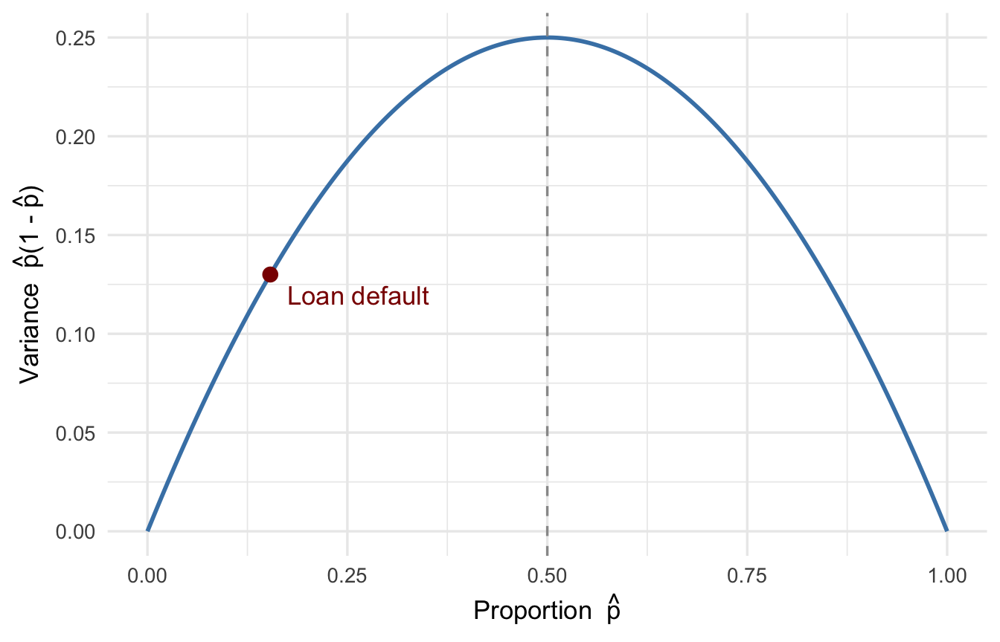
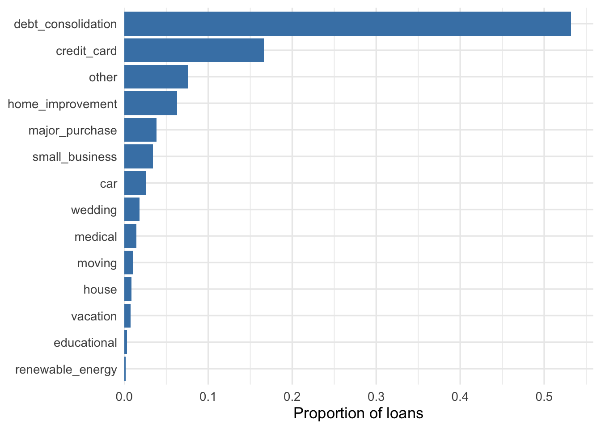
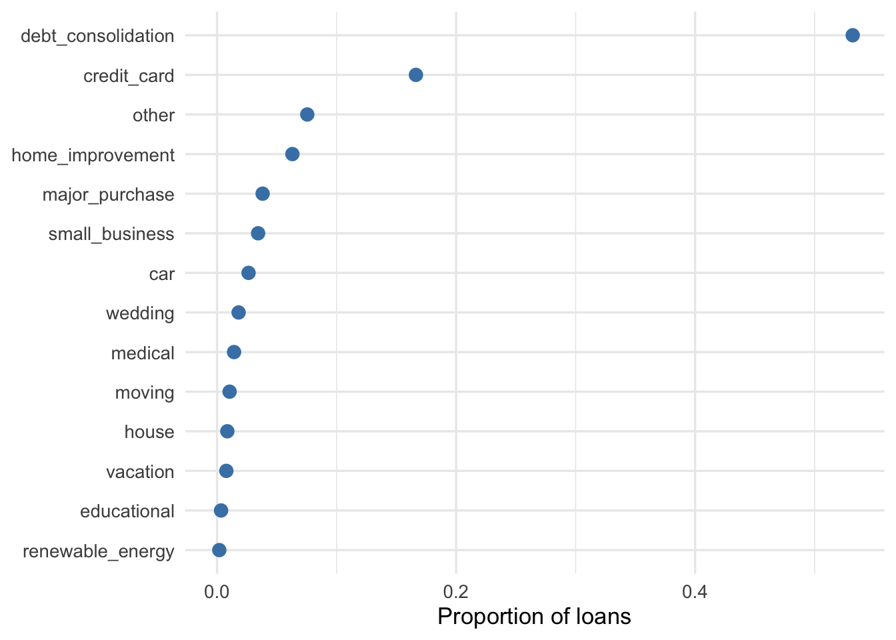
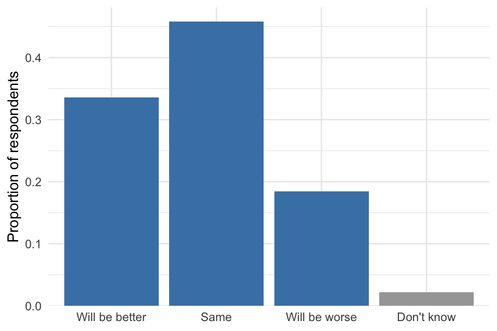

| Purpose | Count | Proportion |
|---|---|---|
| debt_consolidation | 49409 | 0.532 (53.2%) |
| credit_card | 15459 | 0.166 (16.6%) |
| other | 7012 | 0.075 (7.5%) |
| home_improvement | 5856 | 0.063 (6.3%) |
| major_purchase | 3543 | 0.038 (3.8%) |
| small_business | 3191 | 0.034 (3.4%) |
| car | 2449 | 0.026 (2.6%) |
| wedding | 1676 | 0.018 (1.8%) |
| medical | 1323 | 0.014 (1.4%) |
| moving | 976 | 0.011 (1.1%) |
| house | 799 | 0.009 (0.9%) |
| vacation | 722 | 0.008 (0.8%) |
| educational | 313 | 0.003 (0.3%) |
| renewable_energy | 174 | 0.002 (0.2%) |
5 Categorical Variables
The previous chapters described a single quantitative variable — a price, an age, a wage — with tools that assume the values are numbers you can order and average. A categorical variable breaks that assumption. We’ll work with one dataset for most of this chapter. The lending data records 92,902 loans issued on LendingClub, a peer-to-peer platform that matched individual borrowers with investors, between 2008 and 2012. In this chapter we’ll look at two variables in this dataset. The first is purpose, the reason the borrower gave for the loan — consolidating debt, refinancing a credit card, funding a small business, and so on. The second is whether the loan defaulted: LendingClub eventually recorded each loan as either Fully Paid or Charged Off, the latter meaning the borrower stopped paying and the balance was written off as a loss.
5.1 Kinds of categorical variables
A categorical variable records which of several groups an observation belongs to. Two features help us describe its categories: whether they have a meaningful order and how many there are.
A nominal variable has categories with no natural order. In the lending data, purpose takes fourteen values, including debt_consolidation, credit_card, small_business, and car. Nothing about the data says one should come before another. Any ordering we impose is for our own convenience, not a property of the variable.
An ordinal variable has categories that fall in a natural order, but the spacing between them is not meaningful. LendingClub’s loan grade runs from A (least risky) down to G (most risky). We know A beats B beats C, but the gap from A to B need not equal the gap from F to G. The gaps are not measurable. The consumer survey gives another example. When respondents say their finances will “be better,” “the same,” or “be worse” next year, the three answers are ordered, but the distance between them is anyone’s guess.
A binary variable has exactly two categories. A loan being charged off, an employee leaving the company, and a survey respondent owning their home are all yes-or-no facts. Because binary describes the number of categories, a binary variable can be nominal or ordinal.
5.2 Frequency tables: counts and proportions
The most basic summary of a categorical variable is a frequency table. It lists each category and the number of observations that fall within it. Divide each count by the total and you get the proportion in each category, which puts counts from differently sized datasets on a comparable scale. Here is the table for loan purpose, sorted from most to least common.
A table like this is the whole story for a nominal variable in isolation. When a nominal variable has many categories, there’s no particular notion of “location” (because there’s no order in the category labels and no meaningful distance between them). We can loosely think of the “spread” of a categorical variable as measuring how much the frequencies vary across categories — a categorical variable that takes one value 99% of the time has less spread than one where the labels are distributed more uniformly. There are statistical summaries that measure this notion of spread, but they’re beyond the scope of this course.
Binary variables are the exception: with two labels we can talk more meaningfully about location and spread by turning them into zeros and ones and treating them as a quantitative variable. We’ll do that next, and then return to visualizing categorical variables more generally.
5.3 Dummy (indicator) variables
It’s often useful to map a categorical variable to a numeric one. It’s a first step to using them as predictors in a statistical model, for example. Here it’s going to reinforce our understanding of what the sample mean and variance/standard deviation represent.
A dummy variable (also called an indicator variable) is a column that equals 1 when an observation belongs to a category and 0 when it does not. Loan status is either Fully Paid or Charged Off, so we define a single dummy variable to indicate default:
\[ \text{default}_i = \begin{cases} 1 & \text{if loan } i \text{ was charged off} \\ 0 & \text{if loan } i \text{ was fully paid.} \end{cases} \]
In words: we label each loan with a 1 if it defaulted and a 0 if it did not. We could instead label fully paid loans with 1 and defaults with 0. That reversal would change what the mean represents, but it would retain the same two-category information. Table 5.2 shows the recode on a handful of loans — the text label on the left, the number it becomes on the right.
default dummy variable for a few loans. Charged Off becomes 1; Fully Paid becomes 0.
| Purpose | Loan status | default |
|---|---|---|
| credit_card | Fully Paid | 0 |
| small_business | Fully Paid | 0 |
| other | Fully Paid | 0 |
| car | Charged Off | 1 |
| other | Fully Paid | 0 |
That single column now carries everything the two-category variable told us, but in a form we can add up and average. How do we think about means and standard deviations for these binary variables?
5.4 A proportion is the mean of a 0/1 variable
If we take the mean of a binary variable, we just get back the proportion of ones. Let \(x_i\) be the value of the dummy variable for observation \(i\), which is either 0 or 1. The sample mean is
\[ \hat{p} = \frac{1}{n}\sum_{i=1}^{n} x_i = \frac{\text{number of 1s}}{n} = \text{proportion of 1s}. \]
We write a sample proportion as \(\hat{p}\) (read aloud as “p-hat”). It is a sample mean in disguise, and the spread of its individual coded outcomes has a special form. For the loan data, the mean of the default dummy is \(\hat{p} = 0.154\) (15.4%). This is exactly the proportion of loans that were charged off. If we reversed the coding, the mean would instead be 0.846, the proportion of loans that were fully paid.
5.5 The spread of a 0/1 variable
5.5.1 Variance and unpredictability
In Section 3.2 we framed the spread of a quantitative variable as a statement about unpredictability: prices in ZIP 78741 were harder to guess than prices in ZIP 78749 because they varied more around their center, however we measured that variability. The interpretation is the same for binary variables.
Imagine that one of the 92,902 recorded loans is chosen at random and you have to predict whether it defaulted. All you know is that 15.4% of these loans defaulted. Your best guess is “no default,” and you will be right about 84.6% of the time. That is a fairly predictable outcome. A rarer recorded outcome would be easier still. If only one loan in a hundred had defaulted, guessing “no default” every time would be right 99% of the time. The closer the recorded proportion sits to zero — or to one — the less the outcome varies, and the easier it is to call.
Where does prediction get hard? At a coin flip. If exactly half of the recorded loans had defaulted, you would be wrong at least half the time. No guessing rule could do better. We’d therefore expect spread to be largest at 0.5 and smallest near zero or one.
5.5.2 Variance as a function of \(\hat{p}\)
The variance of a binary variable has that property. Let \(\hat{p}\) be the proportion of 1s, which we just showed is the mean. A 0/1 variable can only deviate from its mean in two ways: a 1 sits \((1 - \hat{p})\) above the mean, and a 0 sits \(\hat{p}\) below it. Feed those two deviations into the variance formula and the whole thing collapses to
\[ s^2 = \frac{n}{n-1}\,\hat{p}\,(1 - \hat{p}) \approx \hat{p}\,(1 - \hat{p}), \]
where \(n\) is the number of observations in the dataset.
NoteWhere does \(\hat{p}(1-\hat{p})\) come from?
Start from the definition of the sample variance and split the sum over the 0s and the 1s. Among \(n\) observations there are \(n\hat{p}\) ones and \(n(1-\hat{p})\) zeros. Each 1 contributes a squared deviation of \((1-\hat{p})^2\) and each 0 contributes \((0-\hat{p})^2 = \hat{p}^2\), so
\[ \sum_{i=1}^{n}(x_i - \hat{p})^2 = n\hat{p}\,(1-\hat{p})^2 + n(1-\hat{p})\,\hat{p}^2 = n\hat{p}(1-\hat{p})\big[(1-\hat{p}) + \hat{p}\big] = n\hat{p}(1-\hat{p}). \]
The bracket sums to 1, which is what makes everything collapse. Dividing by \(n-1\) gives the sample variance,
\[ s^2 = \frac{1}{n-1}\sum_{i=1}^{n}(x_i-\hat{p})^2 = \frac{n}{n-1}\,\hat{p}(1-\hat{p}), \]
and dividing by \(n\) instead — the population version — leaves \(\hat{p}(1-\hat{p})\) exactly. For any reasonably large \(n\) the two are indistinguishable.
In words: the variance of a yes/no variable is the chance of a yes times the chance of a no. Figure 5.1 shows how the variance changes as the proportion moves from 0 to 1.

The default proportion of \(\hat{p} = 0.154\) lands well down the left slope of the curve. Among these recorded loans, repayment was far more common than default, so the coded outcomes are comparatively predictable. Reversing the coding would replace \(\hat{p}\) with \(1-\hat{p}\), but both \(\hat{p}(1-\hat{p})\) and the variance would stay the same. The standard deviation is the square root of the variance. For the individual coded loan outcomes, it comes to 0.361.
5.6 Visualizing categorical variables
With the numerical summaries in hand, we can turn to charts. The goal for a categorical variable is almost always to show a frequency, a percentage, or a share across categories, and to let the reader compare those quantities at a glance.
5.6.1 Why bar charts and dot plots work
Reach for a bar chart or a dot plot first. Both encode each category’s value as a length or a position along a common axis, and people read length and position more accurately than any other visual channel. A pie chart, by contrast, asks the reader to compare the angles or areas of wedges, which the eye does poorly — especially when several slices are close in size. Three-dimensional effects and exploded slices make it worse by distorting the very areas the reader is trying to judge. The rule of thumb is simple. If the point of the chart is comparison, encode the numbers as bars or dots and keep the geometry flat.
5.6.2 The distribution of loan purpose
We already have the numbers for loan purpose in the frequency table at the start of the chapter. A chart turns that column of proportions into something the eye can rank at a glance. Figure 5.2 shows the share of loans in each purpose, sorted from most to least common.

The shape is immediate in a way it never quite was in the table: two categories tower over the rest, and everything below home_improvement blurs into a long tail of small proportions. Horizontal bars do the heavy lifting here. With fourteen categories, rotating the labels to fit under vertical bars would leave them cramped and tilted, but laid on their sides they stay flat and readable, and sorting by length turns the chart into a clean ranking.
A dot plot carries the same information with less ink. Instead of a bar running from zero, each category’s proportion is marked by a single point (Figure 5.3). The reader still judges position along a common axis, which is the channel the eye reads most accurately, so nothing is lost — and with many categories the lighter mark can be easier to scan.

Both charts summarize purpose on its own. The more pointed question — which purposes default most often — asks how a second variable, default, shifts across these categories. That is a two-variable summary, and it is where the next chapter begins.
5.6.3 An ordinal example: consumer expectations
Sorting by size was the right call for purpose, whose categories have no inherent order. Ordinal variables call for the opposite. The University of Michigan Surveys of Consumers ask a national sample how they expect their own finances to change over the coming year, and the answer falls into three ordered categories — “will be better,” “the same,” or “will be worse” — plus a fourth, “don’t know,” for those who won’t commit. Restricting to interviews from 2015 through 2025, Figure 5.4 plots the responses in that natural order.

The tallest bar is “same,” but we leave it in the middle where it belongs. The three substantive categories are ordered, so their sequence is part of the message. Reading left to right traces sentiment from optimism to pessimism. Sorting by height would throw that away. “Don’t know” is a recorded response, but it does not have a place on the better-to-worse scale. We therefore place it at the far end and grey it out. Missing responses supply no category and were omitted from the chart.
5.6.4 Good practice and pitfalls
A handful of choices separate a clear categorical chart from a cluttered one. The table below collects the ones that come up most.
| Situation | Prefer | Avoid |
|---|---|---|
| Few categories | A simple bar chart | Decorative or 3D charts |
| Many categories | Horizontal bars, so labels stay flat | Crowded vertical bars with rotated labels |
| Nominal categories | Sort by value when comparison is the point | Alphabetical order when you mean to rank |
| Ordinal categories | Preserve the natural order (A–G, better–worse) |
Re-sorting by frequency and destroying the order |
| Long-tailed categories | Show the top categories plus a combined “Other” | Fifty tiny, unreadable bars |
| Part-to-whole, few categories | A few labeled numbers, or a bar chart | A pie chart with many similar slices |
| Any bar chart | Start the value axis at zero | A truncated axis that exaggerates differences |
A good rule of thumb for any visualization is to make the interesting comparisons as obvious as possible without misleading your reader.